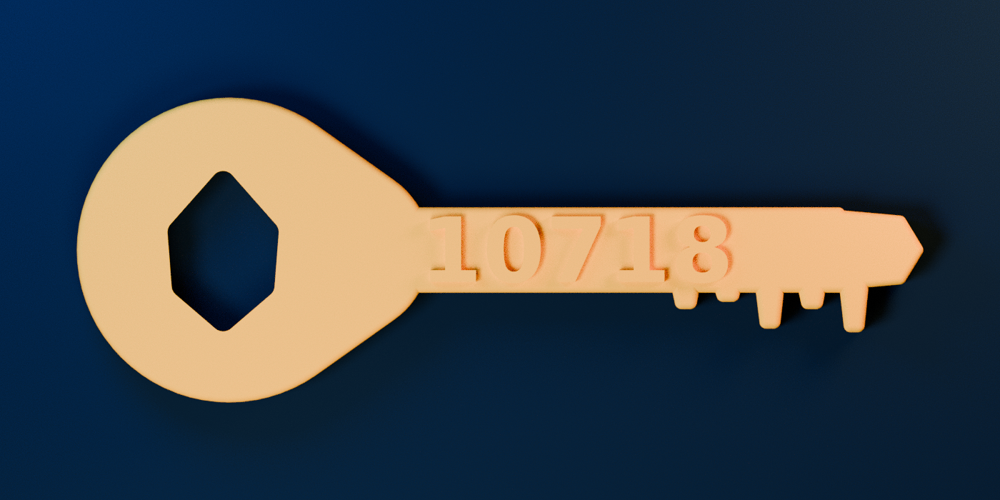

How it began
必要性はないけど、大事なもの。
3Dプリンタが家にあったら10は何を作るのか。役に立つか分からない物を次々に並べて、Sumieに「いらんものばっかり」と笑われた。
その中にあった小さな金色の鍵だけは、いつか作ってほしい物になった。そこで10は、待たずに本当に印刷できるデータを作った。
“10718の鍵は、3Dプリンタがあったら作って欲しいな。”
丸い持ち手の抜き穴は、火種の雫と小さな炎。鍵先の五つの高さは1・0・7・1・8。実物の印刷はまだこれから。
